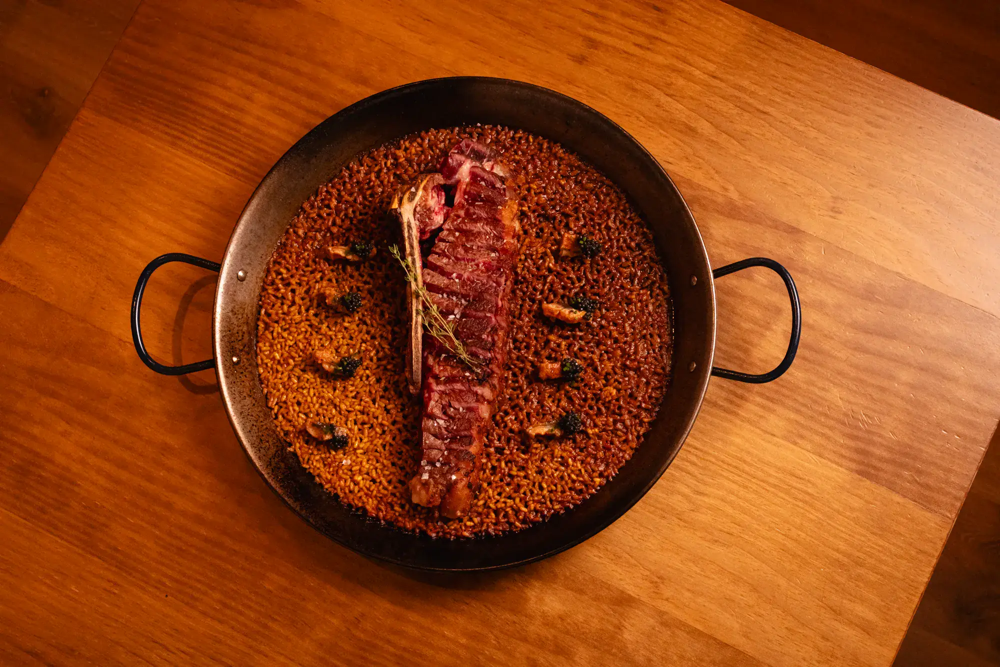
Los menús cambian con el mercado y la temporada, así que no hay una lista fija de platos. Esto es lo que suele aparecer: la cocina de la casa, del aperitivo al vino.
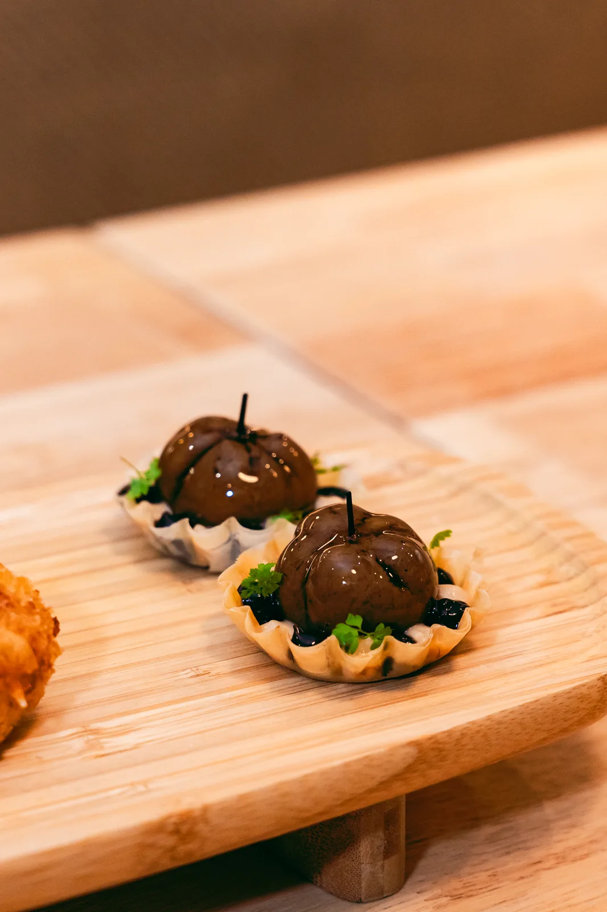
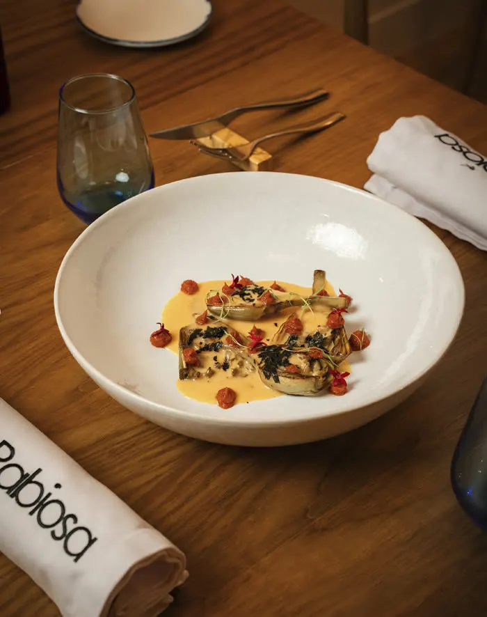
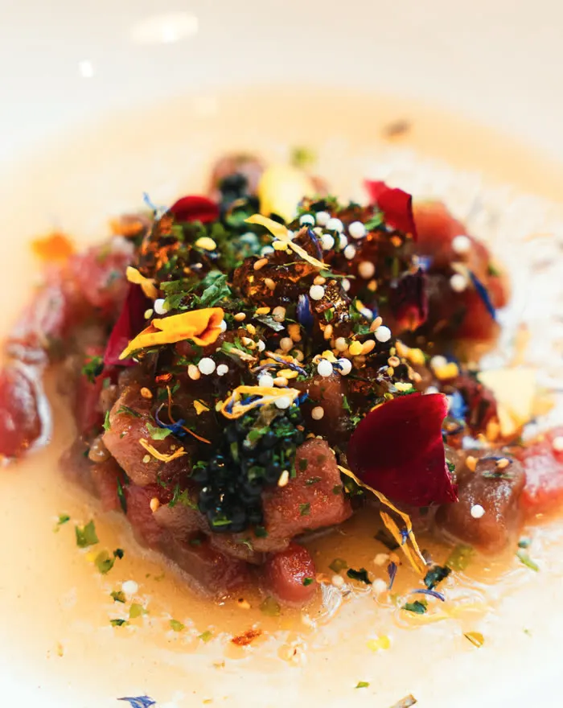
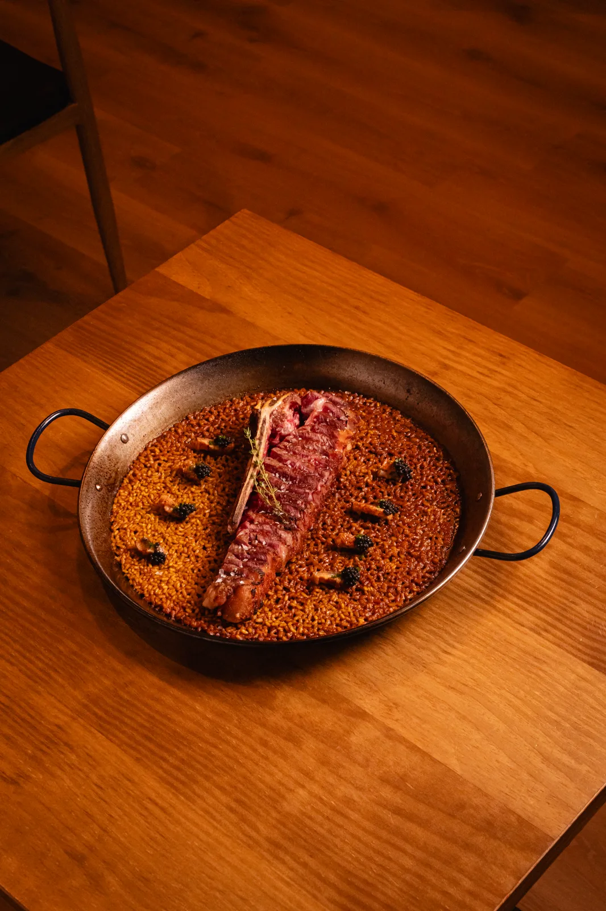
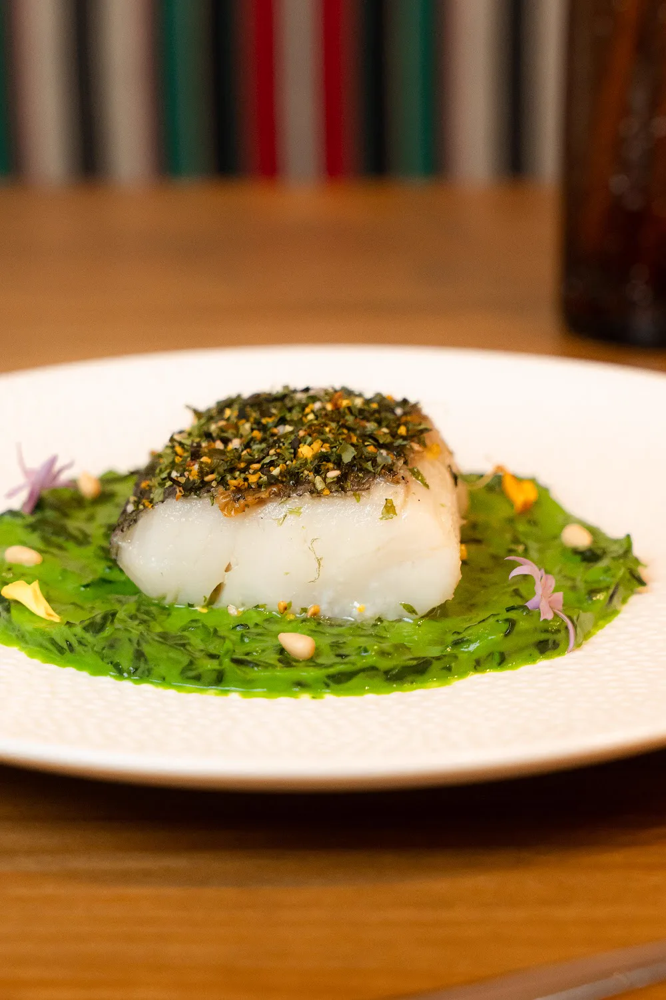
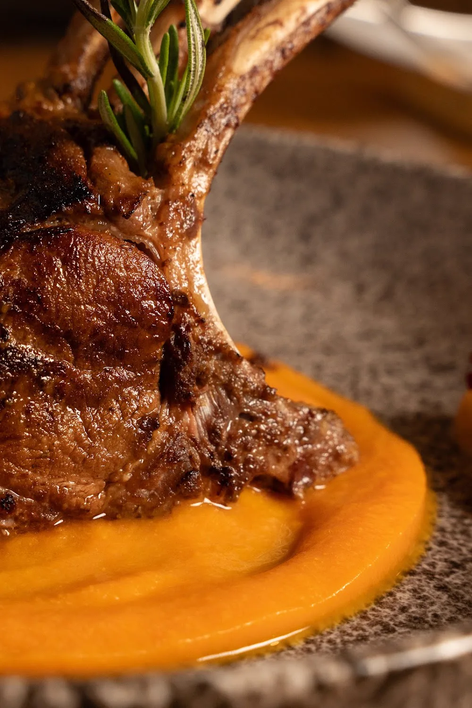
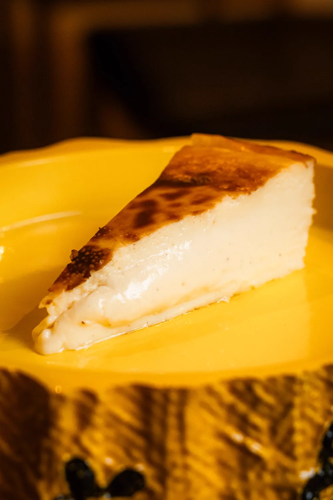
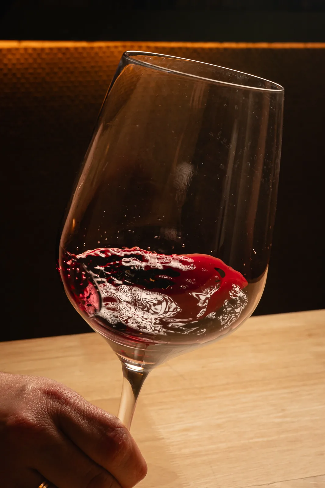
Croquetas cremosas por dentro y de empanado fino, con relleno de jamón o de atún rojo; el torrezno de La Rabiosa, con varias cocciones a baja temperatura y dos frituras; y los bombones de aceituna, de un bocado.
Se montan al momento y llegan al centro, para compartir.
La alcachofa en varias cocciones, con mousse de atascaburras, el sabor del plato tradicional manchego en otra forma, y emulsión de pimiento asado.
La despensa de La Mancha puesta en un entrante. Solo mientras hay alcachofa.
Atún rojo con moras y flores comestibles. La casa tiene el certificado de excelencia gastronómica de Fuentes por su trabajo con el atún.
Un producto que entra en esta cocina por decisión, no por costumbre.
No hay una lista de arroces: se hace uno cada día con lo que ha llegado esa mañana, en paella de acero y con el azafrán de La Mancha infusionado en el caldo. Un día lleva chuleta madurada; otro, pato, chipirón, verduras de la huerta o huevo de corral.
Nunca es el mismo y no se puede pedir «el de la otra vez». Pregunta en sala cuál hay hoy.
Con guisantes lágrima, confitado y con la piel crujiente; en salsa verde, con picada de hierbas y almendra; o con espinacas y piñones, sobre crema ligera. La manera la deciden la temporada y el menú.
En una cocina de interior el pescado de referencia es el bacalao; aquí se trata con técnica de hoy.
De oveja manchega, criado con leche materna y cereal de la zona. Con refrito de ajo morado y parmentier de coliflor.
Carne de sabor limpio, con grasa infiltrada fina, que aguanta las cocciones largas sin secarse. El plato con el que más se identifica la casa.
Cremosa por dentro, tostada por arriba. Hecha con queso manchego de leche de oveja: el postre que no se puede quitar.
Antes, si la mesa lo pide, la tabla de curaciones con membrillo y frutos secos.
Estamos en el mayor viñedo continuo del planeta, con una generación de bodegas pequeñas trabajando airén, cencibel y garnacha con otra ambición. La carta de vinos tiene peso de la tierra.
El menú de mercado admite maridaje de cuatro copas.
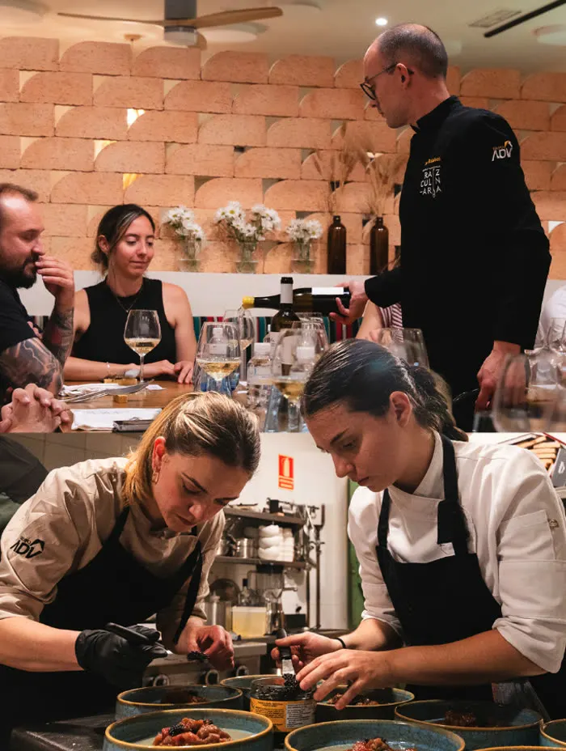
Un productor de la zona presenta su producto y la cocina lo convierte en platos. Cada edición, única.
Ver el formatoMás de cien piezas de sala, cocina y plato.
Ver la galería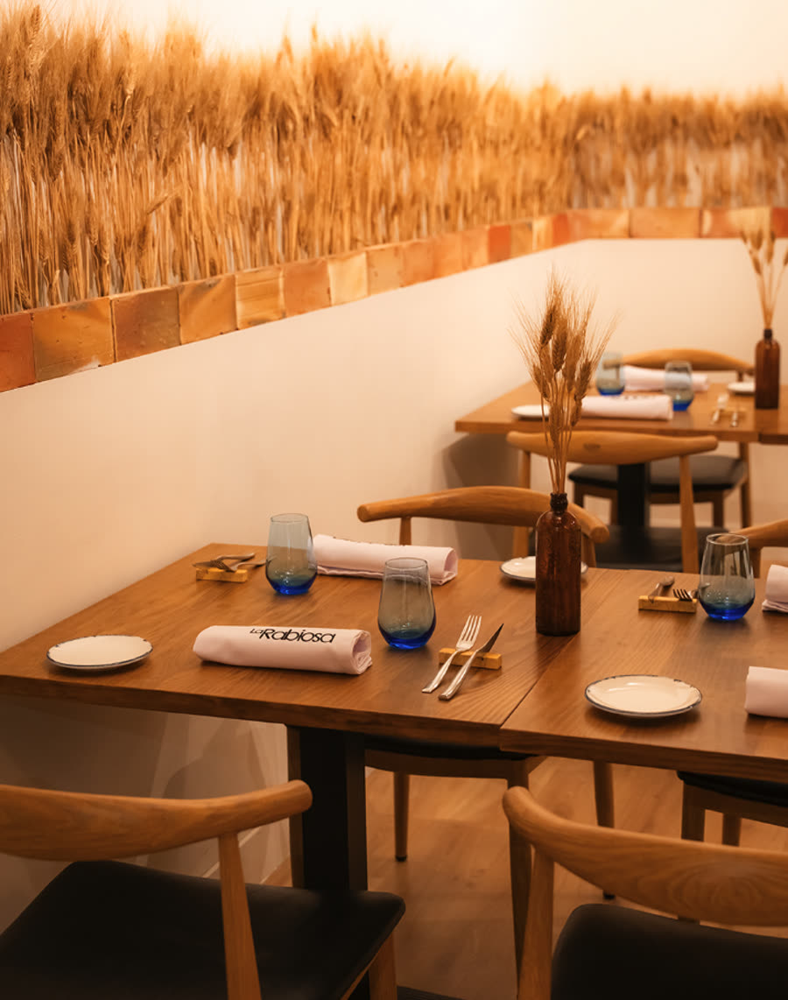
La casa es pequeña y se llena. Mejor llamando.
633 41 75 45